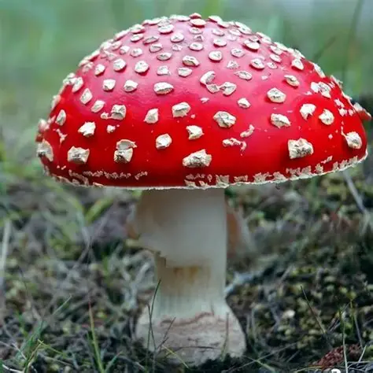

Biologia dos Fungos Alucinógenos
Os fungos alucinógenos, popularmente conhecidos como cogumelos mágicos, pertencem principalmente ao gênero Psilocybe (como o Psilocybe cubensis). Eles contêm compostos químicos psicoativos naturais, sendo a psilocibina e a psilocina os mais conhecidos.
Ação no Sistema Nervoso
Quando consumida, a psilocibina é convertida em psilocina no fígado. Essa substância viaja pela corrente sanguínea até o cérebro, onde atua ligando-se aos receptores de serotonina (principalmente os receptores 5-HT2A). Isso altera a percepção sensorial, distorce a noção de tempo e espaço e pode causar sinestesia (confusão de sentidos).
Uso Histórico e Tradicional
O uso desses fungos remonta a milhares de anos. Povos originários das Américas, como os astecas e maias, utilizavam esses cogumelos em rituais religiosos, divinatórios e medicinais, referindo-se a eles como "carne dos deuses" devido aos seus efeitos intensos.
Aplicações na Medicina Moderna
Atualmente, a ciência tem revisitado essas substâncias de forma controlada. Estudos clínicos avançados investigam o uso da psilocibina associada à psicoterapia para tratar condições graves de saúde mental, tais como depressão profunda resistente a tratamentos convencionais, transtorno de estresse pós-traumático (TEPT) e dependência química.
Exemplos de Fungos Alucinógenos
